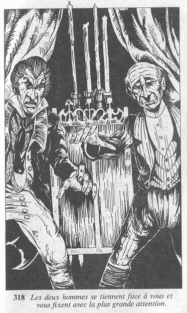

Quelques instants plus tard, Franklin, le majordome, pénètre dans la salle à manger. Il semble stupéfait de vous voir là. Vous demandez à parler au Maître du Manoir et, après s'être légèrement incliné, il disparaît. Dix minutes plus tard, le Comte de Brume, le visage crispé de colère, fait irruption dans la pièce, Franklin sur les talons. Ils se tiennent face à vous, de l'autre côté de la table, et vous fixent avec la plus grande attention.  « Pourquoi me déranger à cette heure de la nuit ? » demande le Comte d'une voix autoritaire. Vous répondez que vous n'ignorez rien du Manoir, de ses habitants, et des pratiques infernales qui s'y trament. Vous ajoutez que vous avez décidé d'y mettre un terme en le faisant disparaître, lui, le Comte de Brume. Les deux hommes échangent un regard, hochent la tête, et portent de nouveau les yeux sur vous. Puis ils s'avancent vers vous, chacun par un côté de la table. Le Comte est à votre gauche, son majordome à votre droite. Vite, vous devez choisir lequel de ces deux adversaires vous allez combattre le premier. Vous pouvez tout d'abord affronter le Comte, ou alors vous préférez commencer avec Franklin.